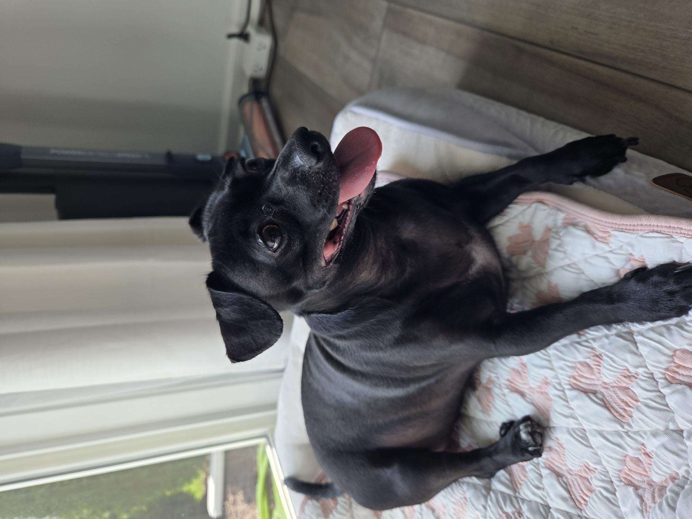
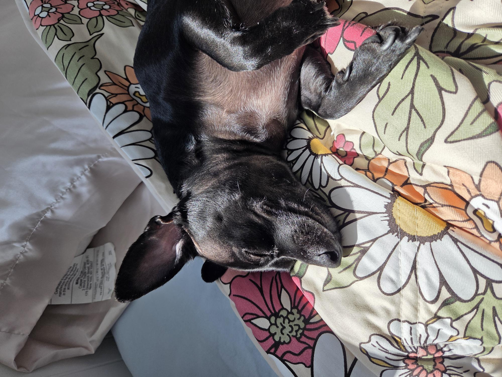
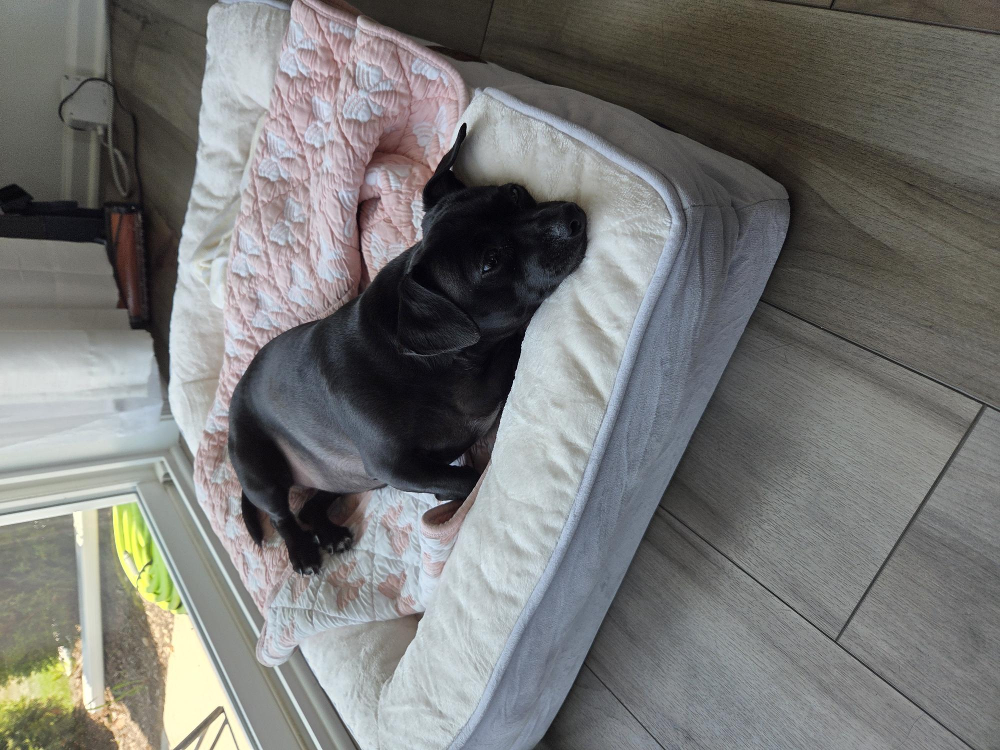
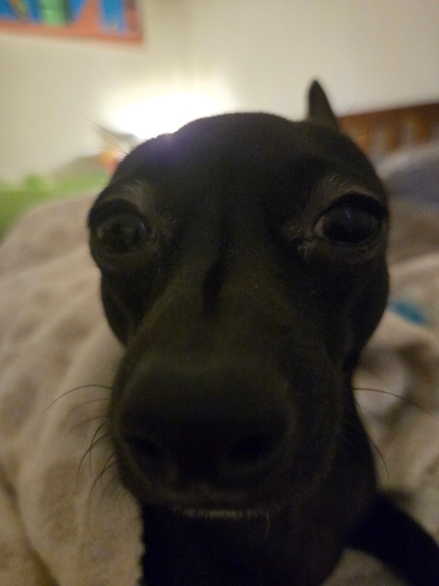

The Chiweenie is a cute and compact cross between a Chihuahua and a Dachshund. While Chiweenie characteristics vary, expect this small dog to have a big personality and a soft spot for their favorite person. Chiweenies thrive on human companionship and make sweet, playful pets for both families and singles. My Chiweenie is named Pearl, she is featured in the photos above!🐕